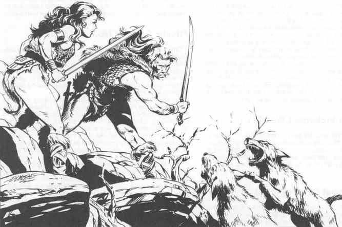

荒野战斗规则 · Combat Rules for Wilderness Play
角色自然希望在最有利于攻击、也最有利于采取防御姿势的位置战斗。遗憾的是，荒野环境以及其中的生物通常不会如此配合。很多时候，角色不得不在远非理想的位置攻击或防御；另一些时候，形势倒转，敌人处在较弱的位置，角色便可能获得优势。
《地城生存指南》第 30–34 页介绍了一些处理特殊情况的战斗规则。为了让没有该书的玩家和地下城主也能使用，本节摘要列出其中一部分；此外，本节还详细说明一些户外环境特有的非标准战斗情况。
